[60] Thăng chức lần 3 – Chính phái
Thăng chức lần 3 của Chính phái và Tà phái
Bước 1 Nói chuyện với Quan Chủ Liễu Như, nhận nhiệm vụ Tìm Rượu Mê Hồn (47)
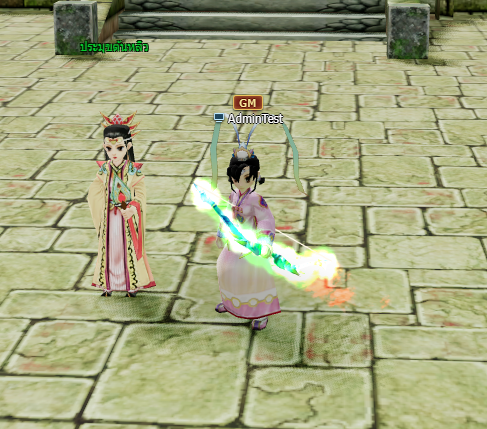
Bước 2 Đi đánh Hỏa Tặc và Độc Nhãn Hỏa Tặc, nhặt vật phẩm nhiệm vụ Rượu Mê Hồn và Chén Mê Hồn đủ 12 cái
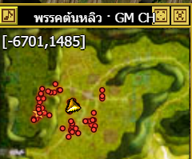
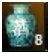 | Rượu Mê Hồn | x12 |
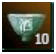 | Chén Mê Hồn | x12 |
Bước 3 Sau đó trả nhiệm vụ cho Quan Chủ Liễu Như

Bước 4 Tiếp tục trả nhiệm vụ cho Tiểu Xuân Thủy (Liễu Chính Quan)

Bước 5 Nhận nhiệm vụ Rượu Trúc Diệp Thanh và Lá Trúc tại Quan Chủ Liễu Như

Bước 6 Tiêu diệt Độc Nhãn Tặc và Trúc Song Kiếm, nhặt Ống Tre và Lá Trúc mỗi loại 10 cái
(quái ở bản đồ Trúc Lâm)
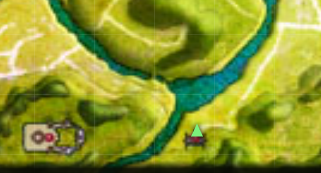
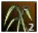 | Lá Trúc | x10 |
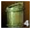 | Ống Tre | x10 |
Bước 7 Tiếp tục trả nhiệm vụ cho Tiểu Xuân Thủy (Liễu Chính Quan)
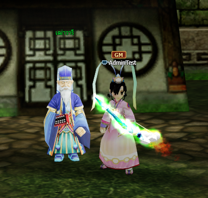
Bước 8 Nhận nhiệm vụ Rượu Trúc Diệp Thanh và Lá Trúc tại Quan Chủ Liễu Như

Bước 9 Nhận nhiệm vụ Rượu Trúc Diệp Thanh và Lá Trúc tại Hồng Phụng Hoàng
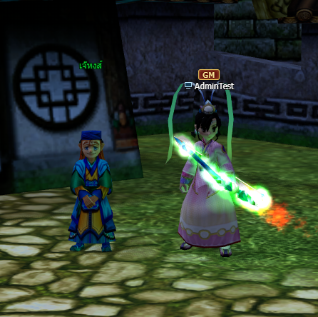
Bước 10 Trả nhiệm vụ Rượu Trúc Diệp Thanh và Lá Trúc cho Tiểu Xuân Thủy

Bước 11 Tiếp tục trả nhiệm vụ Rượu Trúc Diệp Thanh và Lá Trúc cho Quan Chủ Liễu Như

Bước 12 Dịch chuyển đến Thần Võ Môn, nhận nhiệm vụ Thăng chức lần 3 từ Môn Chủ Thần Võ Môn
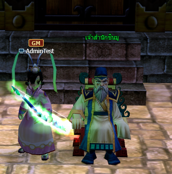
Bước 13 Tiêu diệt Xích Vân Hổ (không được đánh Kiếm Xỉ Hổ), thu thập 10 Da Xích Vân Hổ rồi giao cho Ngọc Diện Tiểu Lang tại Thần Võ Môn
(Không được đánh Kiếm Xỉ Hổ) Nếu đánh Kiếm Xỉ Hổ và nhặt
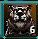
Da Kiếm Xỉ Hổ đủ 6 tấm, nhiệm vụ sẽ thất bại và phải làm lại từ đầu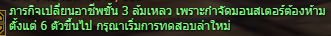
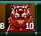 | Da Xích Vân Hổ | x10 |
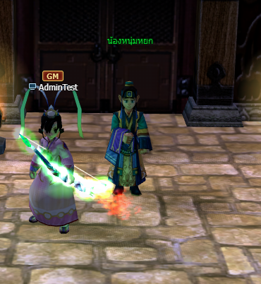
Gom Da Xích Vân Hổ rồi đến trả nhiệm vụ
Bước 14 Gặp Môn Chủ Thần Võ Môn nhận nhiệm vụ Thăng chức lần 3

Bước 15 Nhận nhiệm vụ Thăng chức lần 3 – Phần 2 tại Bạch Diện Bái
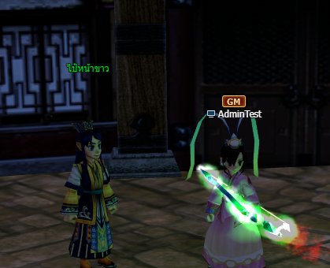
Bước 16 Dịch chuyển về Huyền Bột Phái gặp Vi Đại Bảo nhận Thăng chức lần 3 – Phần 2
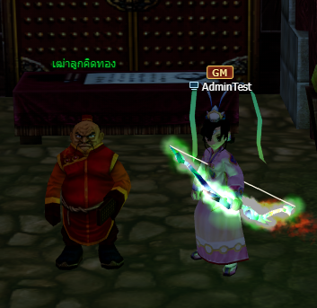
Bước 17 Sau đó gặp Hoa Hữu Khuyết ở Lôi Đài Huyền Bột

Bước 18 Dịch chuyển đến Liễu Thiện Phủ, tiêu diệt San Hô Xà và Linh Xà để lấy 1 Vảy Phi Xà Xanh và 2 Vảy San Hô Xà
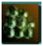 | Vảy Phi Xà Xanh | x1 |
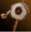 | Chuông | x1 |
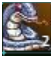 | Vảy San Hô Xà | x2 |
Bước 19 Trả nhiệm vụ cho Hoa Hữu Khuyết tại Huyền Bột Phái
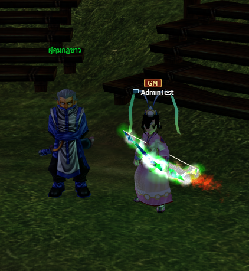
Bước 20 Nhận nhiệm vụ Thăng chức lần 3 – Phần 2 tại Vi Đại Bảo

Bước 21 Dịch chuyển đến Thần Võ Môn gặp NPC Bạch Diện Bái nhận Thăng chức lần 3 – Phần 2

Bước 22 Gặp Môn Chủ Thần Võ Môn nhận Thăng chức lần 3 – Phần 2
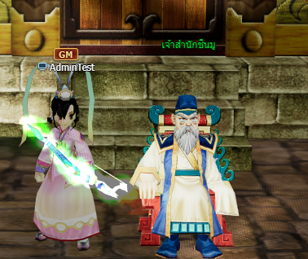
Bước 23 Tiêu diệt Hắc Lang, thu thập 10 Máu Hắc Lang
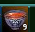 | Máu Hắc Lang | x10 |
Bước 24 Trả nhiệm vụ cho NPC Hoàng Diện Lão Nhân tại Thần Võ Môn
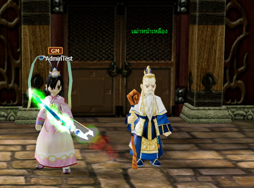
Bước 25 Dịch chuyển đến Liễu Chính Quan trả Thăng chức lần 3 – Phần 2 cho Quan Chủ Liễu Như
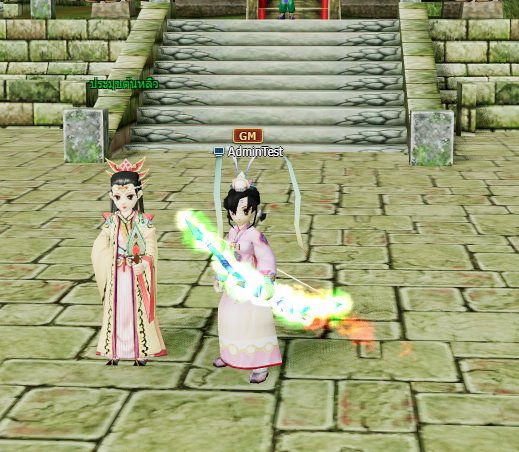
Bước 26 Trả Thăng chức lần 3 – Phần 2 cho Tiểu Xuân Thủy (Liễu Chính Quan)
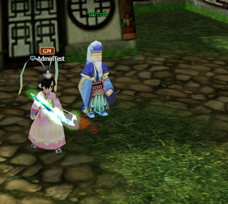
Bước 27 Dịch chuyển đến Thần Võ Môn gặp NPC Hoàng Diện Lão Nhân
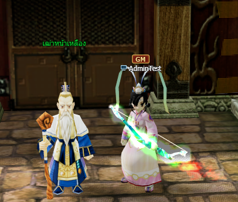
Bước 28 Quay lại gặp Môn Chủ Thần Võ Môn để hoàn tất thăng chức lần 3
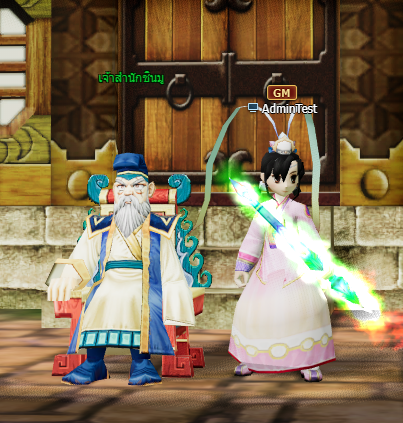